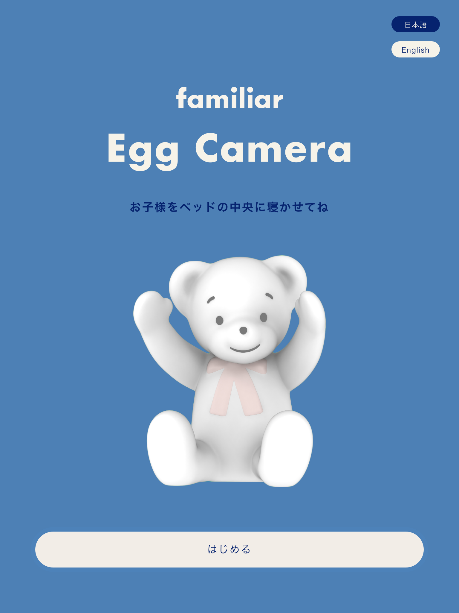
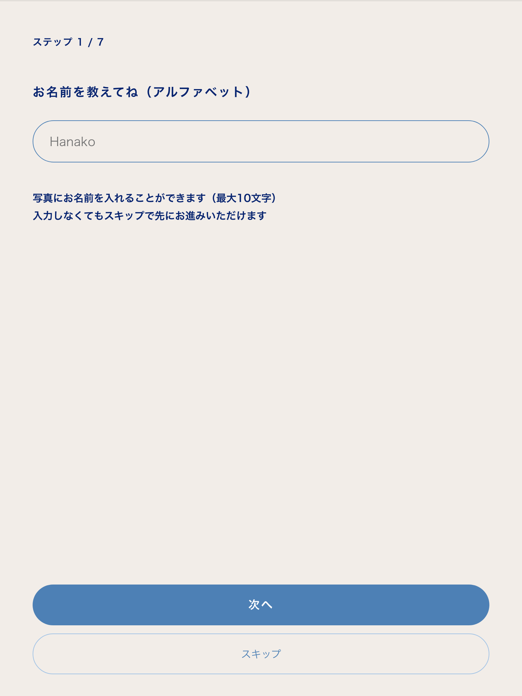
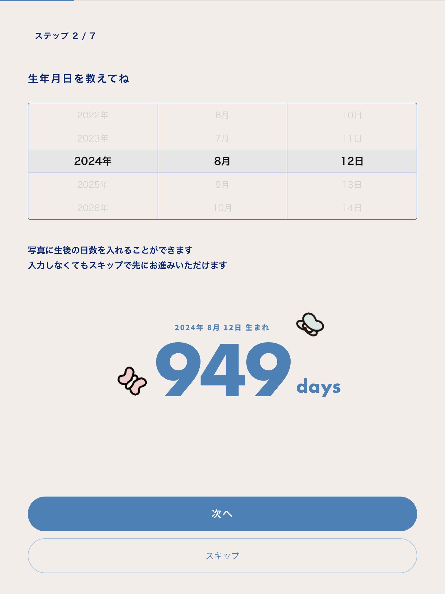
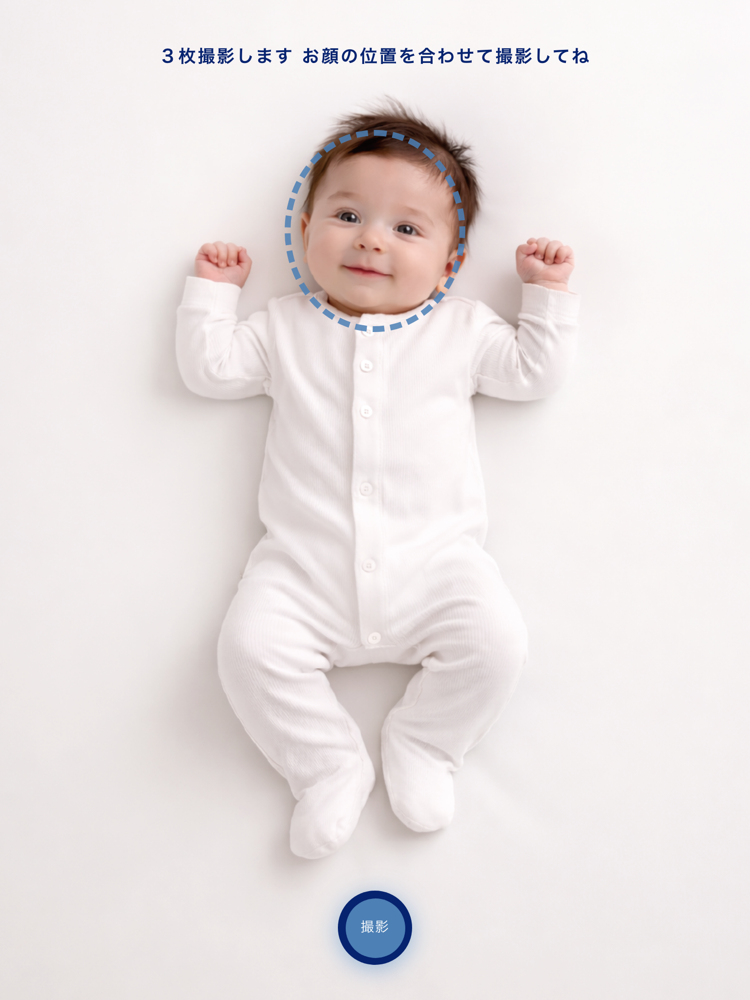
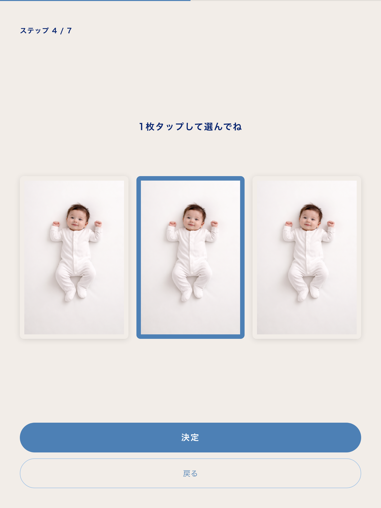
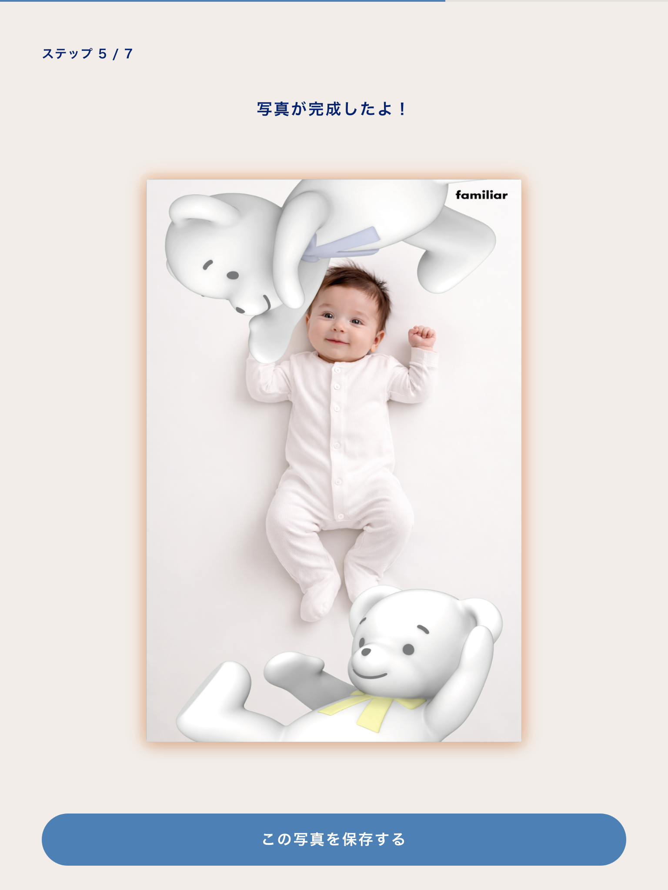
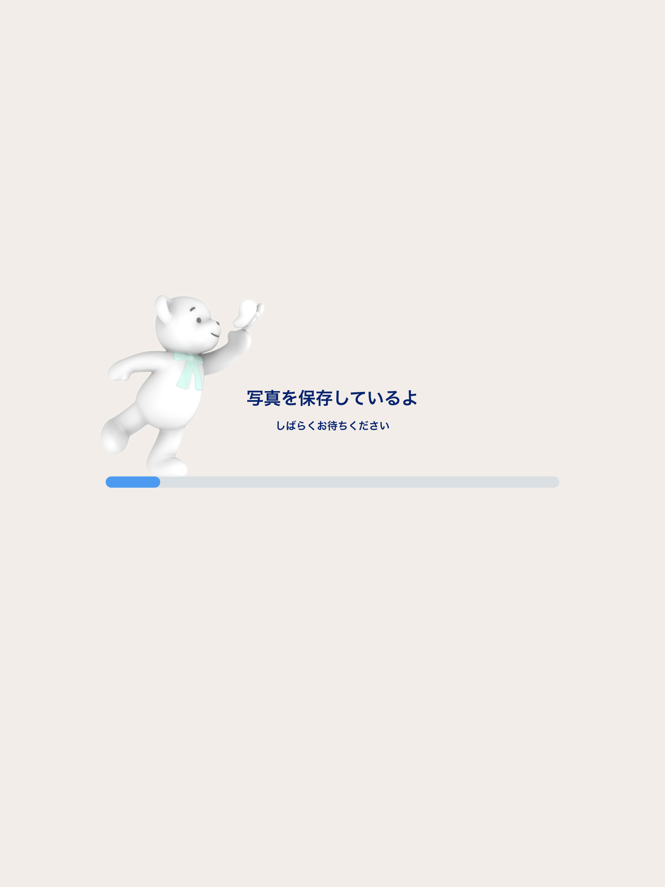
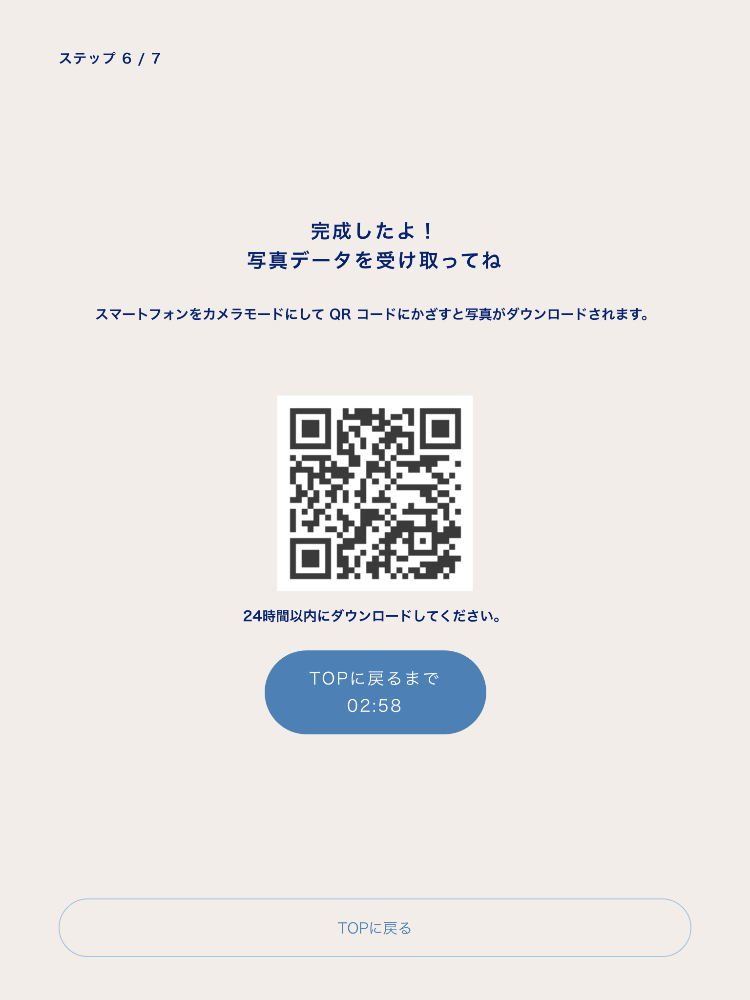
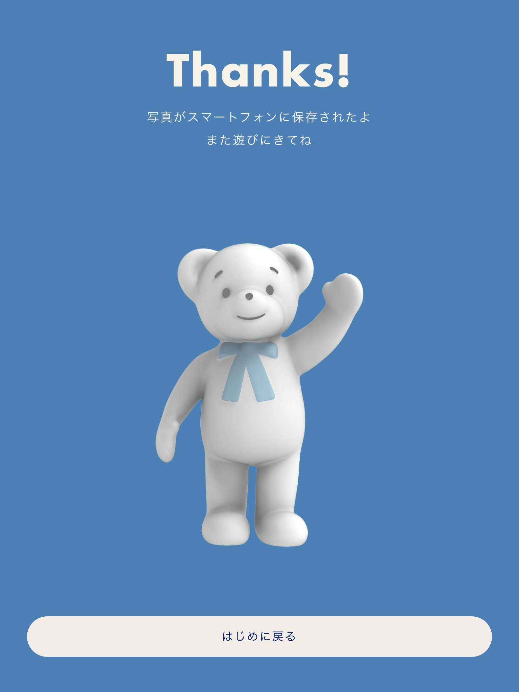
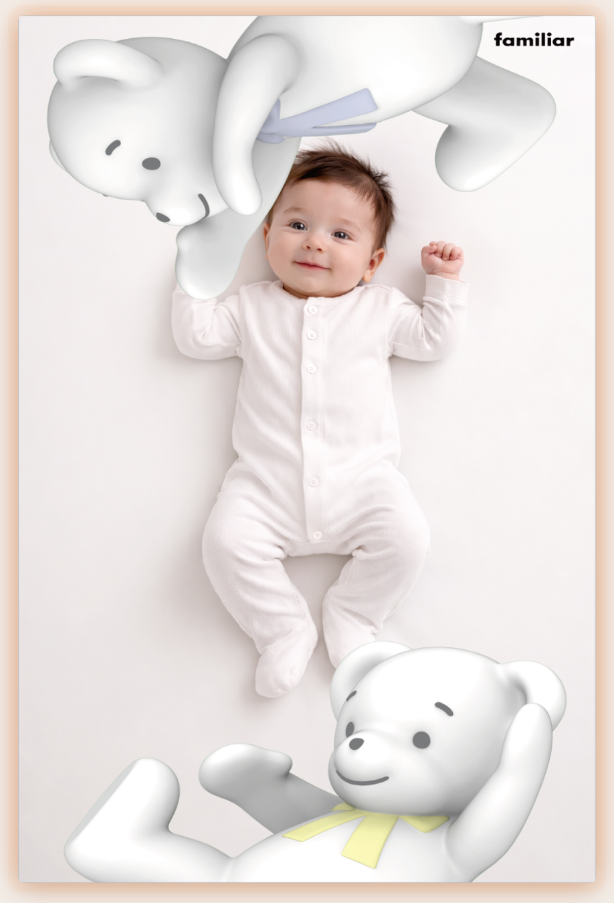

お子様の記念写真を撮影し、スマートフォンで受け取るまでの手順
全体の流れ（全10ステップ）

最初に表示される画面です。お子様をベッドの中央にあおむけで寝かせてから操作を始めてください。

写真にお名前を入れることができます。アルファベットで最大10文字まで入力できます。

写真に生後の日数を入れることができます。年・月・日のダイヤルを上下に動かして選びます。

続けて3枚の写真を撮影します。画面に表示される青い点線の円に、お子様のお顔を合わせてください。
ポイント：手やお顔が円から大きくはみ出さないように、まっすぐ真上から撮ると、きれいに仕上がります。

撮影した3枚の中から、いちばん良い1枚をタップして選びます。

選んだ写真にランダムに選ばれたフレームが合成され、完成イメージが表示されます。

「写真を保存しているよ」と表示され、写真のアップロードが始まります。
通信状況によって時間がかかる場合があります。自動で次の画面に切り替わります。

完成です。表示されたQRコードをお手持ちのスマートフォンで読み取って写真を受け取ります。
画面のボタンには「TOPに戻るまで ○:○○」とカウントダウンが表示されます。読み取りが終わる前に時間が来ると最初の画面に戻るため、先にスマートフォンで読み取りましょう。

「Thanks!」と表示されたら、端末側の操作は完了です。
次の方が使えるよう、必ず「はじめに戻る」を押して最初の画面に戻してください。

24時間以内にダウンロードしてください。
ファイル名: familiar_EggCamera_2026.06.13.01.41.46.jpg
保存できない場合は、写真を長押しで「写真に追加」へ
QRコードを読み取ると、お手持ちのスマートフォンに次のようなダウンロード画面が表示されます。
ファイル名の例：familiar_EggCamera_2026.06.13.01.41.46.jpg